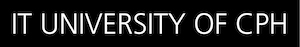
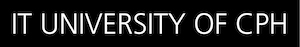

CALL FOR SPECIAL SESSION PROPOSALS- SISAP 2020
Important Dates
- Special Session proposal deadline: January 31, 2020
- Notification: Mid-February 2020
Special sessions
Special sessions are mini-venues, each focusing on one state-of-the-art research direction within the field of similarity search and applications. Special session papers will supplement the regular research papers and be included in the proceedings of SISAP 2020, which will be published by Springer as a volume in the Lecture Notes in Computer Science (LNCS) series. During the conference, special sessions are similar in length to regular sessions but should have a panel format, where authors start with a short presentation of their work and then participate in a moderated panel discussion with the audience, typically led by one of the special session chairs. It is expected that special session chairs attend the conference.
Special Session Process
Usually, each special session should be comprised of four to five full research papers. Special session submissions may include vision/position papers, which will be evaluated based on the quality of the arguments and ideas proposed in the papers. In order to ensure high quality of the conference papers, all papers submitted to special sessions will be peer-reviewed through a strict review process, including papers solicited by the special session chairs. If a special session has many high-quality submissions, some of the submissions may potentially be moved to regular sessions; likewise relevant accepted submissions may be moved into special sessions.
Special session papers must follow all guidelines for regular research papers regarding length, format and submission process. The review process will be coordinated with the regular technical program review process, as coordinated by the PC chairs. The organizers of each special session must provide two reviews per submitted/invited paper, while the regular program committee will provide another two reviews. Final decision on acceptance/rejection will be proposed by the special session chairs and approved by the SISAP 2020 program committee chairs. If special session chairs submit work to their own session, the review process for those papers must be managed by the SISAP 2020 program committee chairs.
Special Session Proposal Requirements
Special session proposals must be submitted by email to sisap2020@itu.dk by January 31, 2020. Proposals will be evaluated by SISAP 2020 general chairs and program committee chairs, based on the relevance to SISAP, qualification(s) of the organizer(s), proposal quality, and anticipated community interest in the topic/proposed potential papers. Notifications will be sent by mid February.
Please include the following information in your proposal:
- Title (and preferably acronym) of the proposed special session.
- A session abstract including significance justification and a brief overview of the state-of-the-art of the proposed special session topic.
- For each of the organisers: name, affiliation, email, and links to a homepage or a Google Scholar profile (or similar).
- List of solicited papers, if applicable, including for each paper: tentative title, author list, and preferably a short abstract; if session chairs anticipate submitting to their session, it is worth noting here as well.
- Proposal for arrangement of the reviews from session organizers (e.g., list of members of mini-PC for the special session).
- A tentative proposal for the moderator of the panel discussion.

 
